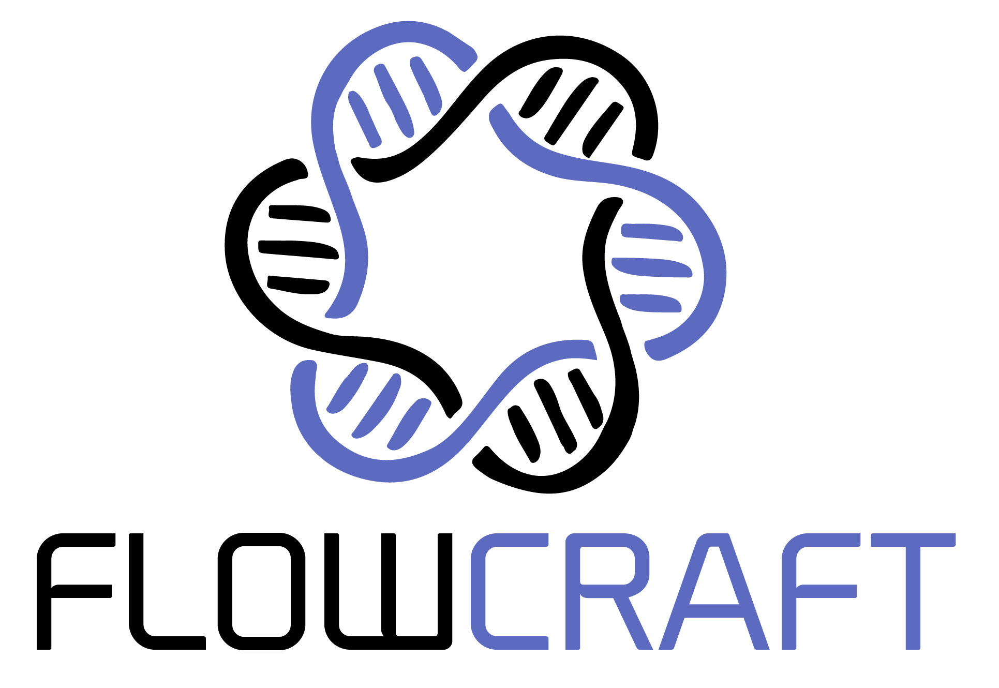

FlowCraft-ZH
Getting Started
Overview
Installation
About
User Guide
Basic Usage
Pipeline building
Pipeline configuration
Pipeline inspection
Pipeline reports
Components
Developer Guide
General orientation
Process creation guidelines
Template creation guidelines
Recipe creation guidelines
Docker containers guidelines
Dotfiles
Pipeline reporting
Reports
Source API
flowcraft package
FlowCraft-ZH
Docs
»
FlowCraft 中文文档
View page source
FlowCraft 中文文档
¶

A NextFlow pipeline assembler for genomics.
Getting Started
Overview
What is Nextflow
What FlowCraft does
Who is FlowCraft for
Why not just write a Nextflow pipeline?
Installation
About
User Guide
Basic Usage
Build
Execution
Inspect
Reports
Pipeline building
Raw input types
Merge parameters
Forks
Directives
Extra inputs
Pipeline file
Pipeline configuration
Parameters
Resources
Containers
Profiles
User configutations
Pipeline inspection
Requirements for inspect
Trace fields
Usage
Pipeline reports
abricate
Table data
Plot data
Components
Download
Reads Quality Control
Assembly
Post-assembly
Binning
Annotation
Distance Estimation
Mapping
Taxonomic Profiling
Typing
Developer Guide
General orientation
Codebase structure
Code style
Testing
Documentation
Process creation guidelines
Template creation guidelines
Recipe creation guidelines
Docker containers guidelines
Dotfiles
Pipeline reporting
Reports
Report JSON specification
Nextflow metadata
Root
Versions
ReportJson
Table data
Plot data
Warnings and fails
Source API
flowcraft package
Indices and tables
¶
索引
模块索引
搜索页面
{kind=link}